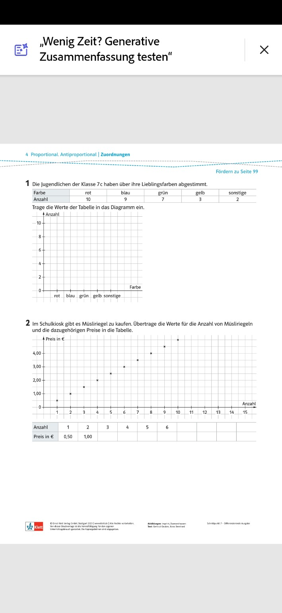
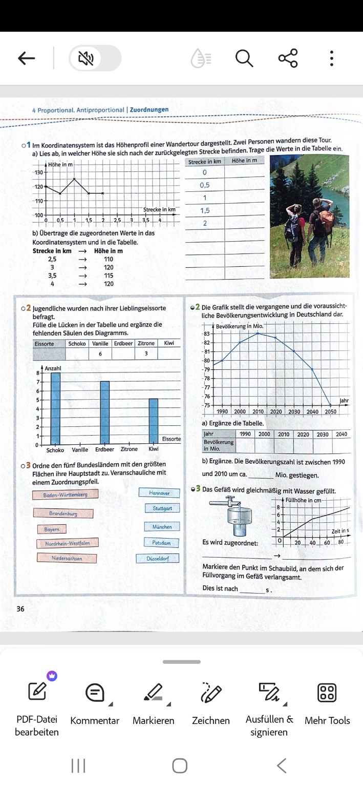

Lernen: Aufgaben in der Reihenfolge der Arbeitsblätter bearbeiten.
Blatt 1 · Farben und Müsliriegel

Blatt 2 · Diagramme und Zuordnungen

Diese eigenständige Übungsfassung ist noch nicht mit der bestehenden Firebase-Tages- und Wochenwertung oder dem Multiplayer-Battle verbunden.